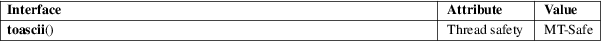

toascii − convert character to ASCII
Standard C library (libc, −lc)
#include <ctype.h>
[[deprecated]] int toascii(int c);
Feature Test Macro Requirements for glibc (see feature_test_macros(7)):
toascii():
_XOPEN_SOURCE
|| /* glibc >= 2.19: */ _DEFAULT_SOURCE
|| /* glibc <= 2.19: */ _SVID_SOURCE || _BSD_SOURCE
toascii() converts c to a 7-bit unsigned char value that fits into the ASCII character set, by clearing the high-order bits.
The value returned is that of the converted character.
For an explanation of the terms used in this section, see attributes(7).

POSIX.1-2008.
SVr4, BSD, POSIX.1-2001. Obsolete in POSIX.1-2008, noting that it cannot be used portably in a localized application.
Many people will be unhappy if you use this function. This function will convert accented letters into random characters.
isascii(3), tolower(3), toupper(3)